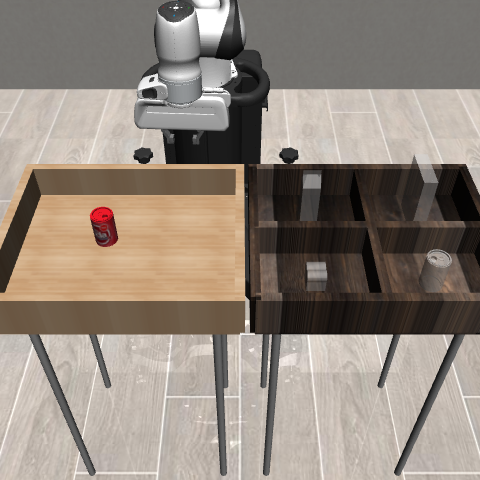

正式配置 · 冻结 v5 CAN LAB
基于世界模型的
机器人抓取搬运
预测动作的后果，选择下一步。
在真实的延迟与扰动中，完成抓取、搬运与失败恢复。
Panda / PickPlaceCan · 23维状态输入 · MuJoCo仿真
任务仿真环境SCENE / 01

PANDA 机械臂 待抓取罐体X / Y / Z WORLD FRAME观测 → 预测 → 执行场景静帧用于说明任务；真实运行见下方日志回放
Full + v5 · 两条件等权—%
读取冻结确认结果
独立物理起点60个
固定策略与模型种子共享起点
真实执行延迟100ms
D2先进先出 · 20 Hz控制
世界模型预测时域8步
4条候选 · 每周期只提交1条命令
任务成功率
两种噪声条件等权查看统计口径与完整数值 ＋
| 配置 | 条件 | 任务成功 | 稳定成功 / 全部执行 | 状态 |
|---|
确认批次包含60个独立起点、1680次登记执行。本表展示恢复因素对照的1440次，另240次为新BC观测语义的独立对照。Full每条件180次为60起点×3个固定世界模型种子；重复种子与噪声执行不会增加独立起点数。联合差值先在起点内平均种子，再等权两种噪声。稳定性是成功后的20步附加诊断，未计入400步基准。
预算候选出现一次救回和一次退步，保持未采用；当前验证为低维状态仿真，未进行视觉输入或真机验证。查看完整方法与边界 ↗
03 / TRACE REPLAY
沿着每一步，理解一次恢复。
直接读取正式确认的状态、动作与阶段记录；可以暂停、拖动并比较同一起点。
机械臂末端罐体淡线为完整记录 · 实线为已播放
NORMAL / 正常监测
数据说明案例固定为Full seed17；统计切换不改变案例配置。这是记录位置的二维可视化，不是三维物理重演，也不显示未记录的预测轨迹。位置为本步输入，成功状态为执行后结果。
→→→→
ACTION-CONDITIONED WORLD MODEL
以动作作为条件，预测未来状态。
INPUT
↓OUTPUT
方法取舍
世界模型负责比较动作后果，恢复监督负责失持与停滞处置。恢复触发不读取世界模型评分、真实奖励或成功标签；收益通过同批对照分别评价。
05 / START EXPLORING
从看懂系统，到复现一次实验。
静态展台，无需安装前端依赖。启动本地服务即可访问全部媒体与原始文件。
启动项目展台
PowerShell · 项目根目录& '.\.venv\Scripts\python.exe' -m http.server 8766 --bind 127.0.0.1浏览器访问 http://127.0.0.1:8766/
- 先看全貌默认查看Full＋v5完整系统，切换BC＋v5了解强基线。
- 再看控制过程播放救回案例，暂停在触发前后，比较提交与执行动作。
- 最后查看证据切换噪声与评价指标，追溯原始结果、输入锁与设计文档。